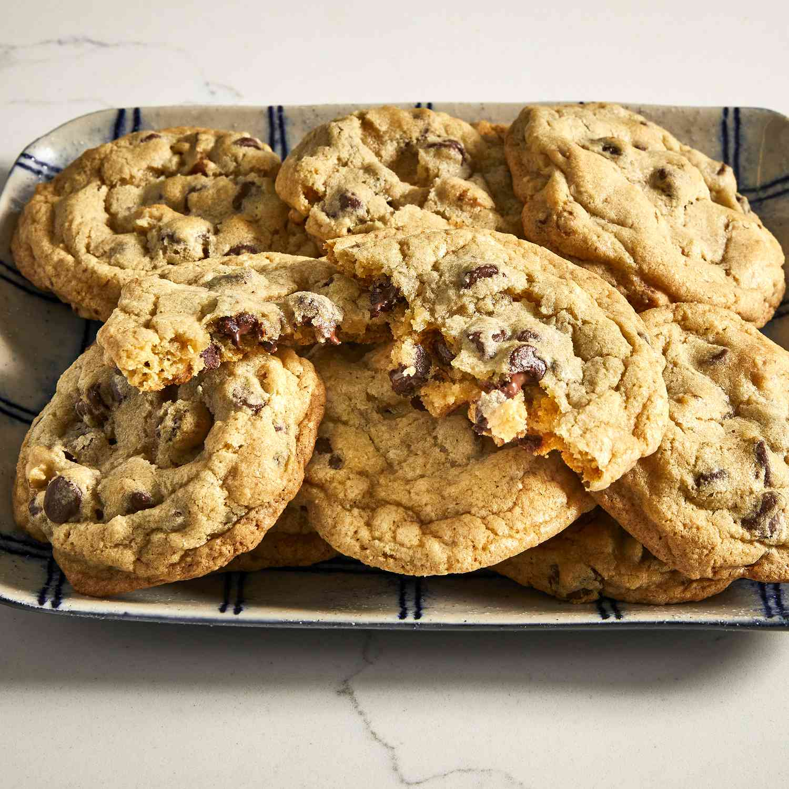

Home
Chocolate Chip Cookies

Description
This chocolate chip cookie recipe makes dozens of delicious cookies with crisp edges,
chewy centers, and plenty of chocolate chips.
Ingredients
- 1 cup butter, softened
- 1 cup white sugar
- 1 cup packed brown sugar
- 2 large eggs
- 2 teaspoons vanilla extract
- 1 teaspoon baking soda
- 2 teaspoons hot water
- ½ teaspoon salt
- 3 cups all-purpose flour
- 2 cups semisweet chocolate chips
- 1 cup chopped walnuts
Steps
- Gather your ingredients, making sure your butter is softeen transfer them to a wirened, and your eggs are room temperature.
- Preheat the oven to 350° F (175° C). Beat butter, white sugar, and brown sugar together in a large bowl with an electric mixer until light and creamy, about 4 minutes.
- Beat in eggs, one at a time, then stir in vanilla.
- Dissolve baking soda in hot water; add to batter along with salt and mix until combined.
- Stir in flour just until no dry streaks remain. Fold in chocolate chips and walnuts, if using, until evenly distributed.
- Drop rounded 1 ½-tablespoon portions of dough 2 inches apart onto ungreased baking sheets, using a medium cookie scoop if desired.
- Bake in the preheated oven until the edges are lightly browned and the centers are just set, about 10 minutes.
- Let the cookies cool briefly on the baking sheets, th rack to cool completely.
- Serve or store cooled cookies in an airtight container.